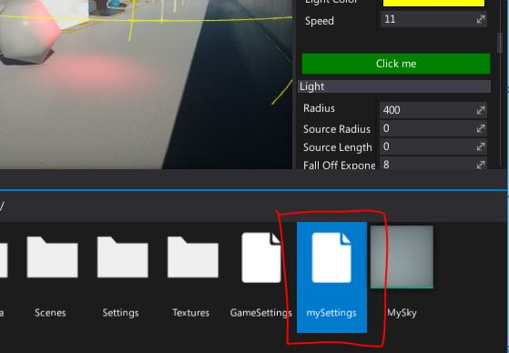
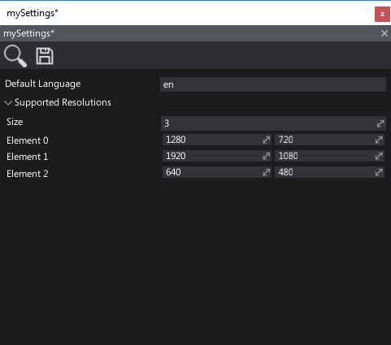
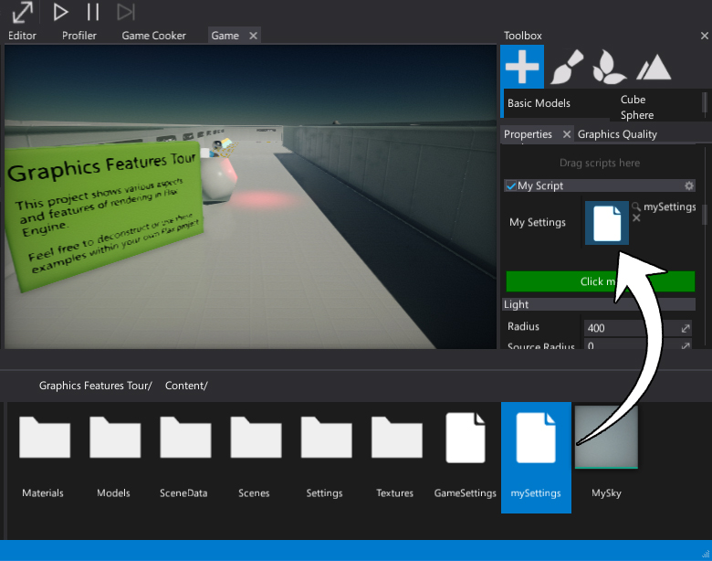

HOWTO: Create a custom asset type
Flax uses two types of assets:
- Binary asset (files with extension
.flax) - Json assets (files with extension
.json/.scene/etc.)
Binary assets are better choice for textures, models and bigger types in general. While json assets are useful when dealing with data that can be used directly by scripts and scene objects.
In this tutorial you will learn how to define a custom json asset type and use it in your game.
1. Define a data class
Implement a class that will define the asset data layout. In this example we store some supported screen resolutions and the default language. Then it will be saved to json and modified in editor. Later game can load asset and use its data.
public class MySettings
{
public Vector2[] SupportedResolutions =
{
new Vector2(1280, 720),
new Vector2(1920, 1080),
};
public string DefaultLanguage = "en";
}
Add this class to game scripts assembly. It can be in editor scripts assembly but then it will be design-time only.
2. Create an asset
Next step is to create an actual asset (.json file) that contains settings.
In project Content use right-click and use option New -> Json Asset.
Then specify it's name and pick the type to created class typename (in this example it's MySettings).
Press Create button to make a file with default values of the type.

Also, you can use Custom Editor or Custom Window or just editor-only code to spawn a new asset in editor.
[CustomEditor(typeof(MyScript))]
public class MyScriptEditor : GenericEditor
{
public override void Initialize(LayoutElementsContainer layout)
{
base.Initialize(layout);
layout.Space(20);
var button = layout.Button("Click me", Color.Green);
button.Button.Clicked += OnButtonClicked;
}
private void OnButtonClicked()
{
// Create json asset
FlaxEditor.Editor.SaveJsonAsset("Content/mySettings.json", new MySettings());
}
}
After selecting the script and pressing the custom editor button the asset appears in the Content folder.

3. Edit asset in editor
Double-click on created asset. Dedicated editor window will pop up. Use it to modify the asset and press Save button to save the data.

Json asset file contents:
{
"ID": "a71da43c4c1905f17c1104978df8070f",
"TypeName": "MySettings",
"EngineBuild": 6147,
"Data": {
"SupportedResolutions": [
{
"X": 1280.0,
"Y": 720.0
},
{
"X": 1920.0,
"Y": 1080.0
},
{
"X": 640.0,
"Y": 480.0
}
],
"DefaultLanguage": "en"
}
}
4. Use asset in game
Using json asset works the same in editor and in builded game. The difference is that during game cooking json assets are compressed and encrypted so data is secure.
To use this asset simply add JsonAsset reference to your script and drag and drop the mySettings.json asset to it.
public class MyScript : Script
{
public JsonAsset MySettings;
public override void OnStart()
{
if (MySettings)
{
var obj = (MySettings)MySettings.CreateInstance();
Debug.Log("Default language: " + obj.DefaultLanguage);
}
}
}
